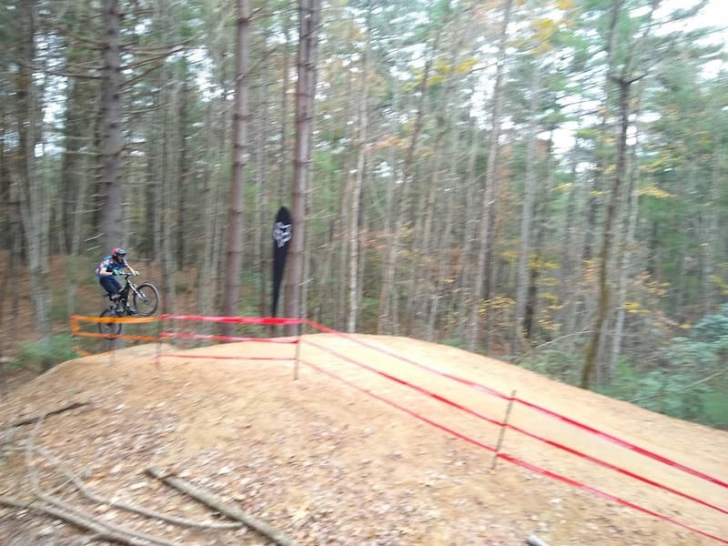

Over the past 10 years I have owned about 40 various types of bikes from mountain to road bikes. A lot of these bikes I have bought to fix
and mess with for a few months before I sell and a few of them have been with me for years.
Bikes I currently own:
Year
Name
Model
2014
Santa Cruz
Bronson
2010
Surly
Cross Check
2010
Surly
Cross Check
2000
Klein
Adroit Pro
1981
Bianchi
Vittoria
Overall I am satisfied with all of my current bikes. They all have a unique purpose and work well. In the future, I am thinking about downsizing my fleet by replacing the Bianchi and Surly Cross check
with a steel gravel single speed such as a Crust Evasion Lite or Black Mountain Cycles Monstercross. A bike like that would allow me to keep the
current functionality of the Surly and Bianchi but also save a lot of space.
About Me
Riding off of an 8 foot drop
I am Joseph Onghena and I am a Junior at The University of North Carolina at Charlotte. I have been cycling for the past
10 years. Throughout those years I have focused on many disciplines of biking such as road, mountain, and gravel and have biked over 11,000 miles.
I am currently the president of the mountain biking club at UNCC. IN this club, I plan group rides and mountain biking events for students in the club to
particpate in. Throughout my time in the club I have met many people from UNCC who enjoy biking like I do and it has helped me make a lot of friends on

Riding a jump at kanuga bike park
Biking Seasons
Riding down A dried up water fall
Mountain Biking Season
The main season for mountain biking is late spring to early fall. This period is characterized by little rain so the trials
stay open during most days and do not get damaged. Also, ski lift access mountain bike parks open up. Also, this season is
when the majority of races and events happen for mountain biking. You can still go mountain biking in the winter however,
due to the weather changes it can be hard to find trails that are open.
Surly Cross Check on gravel during the fall
Road and Gravel Biking Season
There is no specific season for gravel and road biking since they are a lot less weather dependent. The best times to go on road rides is in the mornings
before there are a lot of cars on the roads. The best times to go on gravel rides are after rain because the gravel will be
packed down well.
Why I Like Biking
Riding down a rock in New York
Biking is one of the most fufilling sports that I have focused on within the past 10 years. I find that it is really rewarding because
it helps me build confidence and I can see my progression well. For example, at the end of bike park days, I end up doing features that I did
not think I would be able to do earlier in the day. Also, mountain biking helps build confidence a lot. I have learned how to judge my abilities
and I have become more confident while attempting features that scare me.
Riding off of a drop
Another reason that I like biking is that I like working on bikes. It is enjoyable to diagnose and fix problems on bikes and it helps me destress.
I also like adding new parts to bikes to change the feel and handling of them. Changing the feel of the bike allows me to be more confident on certain features
and with the bike overall.
Where to Go Biking
Black Mountain in Pisgah National Forest
Mountain Biking
In North Carolina one of the best locations for mountain biking are near the Ahseville and Brevard area. This area has Pisgah National forest
which has over 100 miles of single track trails. This area has long climbs and decents and allows for long and difficult rides. This area also
has DuPont State Recreatoinal Forest which has almost 100 miles of trails that are easy to connect for long rides. This area is not as rugged as
Pisgah but it provides a lot of options for different rides and routes.
Gravel Biking
North Carolina also have a lot of good gravel routes. One exmaple is around Linville Gorge. This is a 50 mile route in Linville Gorge Wilderness area and
is a challenging route with over 7000 feet of elevation. There are also other great areas in North Carolina for gravel biking such as Uwharrie forest and
Old Fort NC.